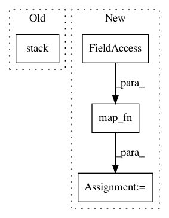

838c6ccddbd5af98667d9585ee57e4610b361747,models/official/retinanet/retinanet_model.py,,add_metric_fn_inputs,#Any#Any#Any#Any#,246
Before Change
cls_outputs_all_after_topk = tf.stack(cls_outputs_all_after_topk, axis=0)
box_outputs_all_after_topk = tf.stack(box_outputs_all_after_topk, axis=0)
indices_all = tf.stack(indices_all, axis=0)
classes_all = tf.stack(classes_all, axis=0)
metric_fn_inputs["cls_outputs_all"] = cls_outputs_all_after_topk
metric_fn_inputs["box_outputs_all"] = box_outputs_all_after_topk
metric_fn_inputs["indices_all"] = indices_all
metric_fn_inputs["classes_all"] = classes_all
After Change
tf.expand_dims(indices, 1))
return [indices, classes, cls_outputs_after_topk, box_outputs_after_topk]
(indices_all, classes_all, cls_outputs_all_after_topk,
box_outputs_all_after_topk) = tf.map_fn(
_compute_top_k, [cls_outputs_all, box_outputs_all],
back_prop=False,
dtype=[tf.int32, tf.int32, tf.float32, tf.float32])
// Concatenates via the batch dimension.
metric_fn_inputs["cls_outputs_all"] = cls_outputs_all_after_topk
metric_fn_inputs["box_outputs_all"] = box_outputs_all_after_topk
In pattern: SUPERPATTERN
Frequency: 3
Non-data size: 4
Instances
Project Name: tensorflow/tpu
Commit Name: 838c6ccddbd5af98667d9585ee57e4610b361747
Time: 2018-10-18
Author: shizhiw@google.com
File Name: models/official/retinanet/retinanet_model.py
Class Name:
Method Name: add_metric_fn_inputs
Project Name: tensorflow/cleverhans
Commit Name: 4887ef8baecbf5315ec0f235e56a4f93cd05aad7
Time: 2018-10-04
Author: nottombrown@gmail.com
File Name: cleverhans/attacks_tf.py
Class Name:
Method Name: spm
Project Name: fgnt/nara_wpe
Commit Name: 4580d28f9cc8f846ee6fb42dda6909a98797fcd9
Time: 2018-05-16
Author: heymann@nt.upb.de
File Name: nara_wpe/tf_wpe.py
Class Name:
Method Name: wpe